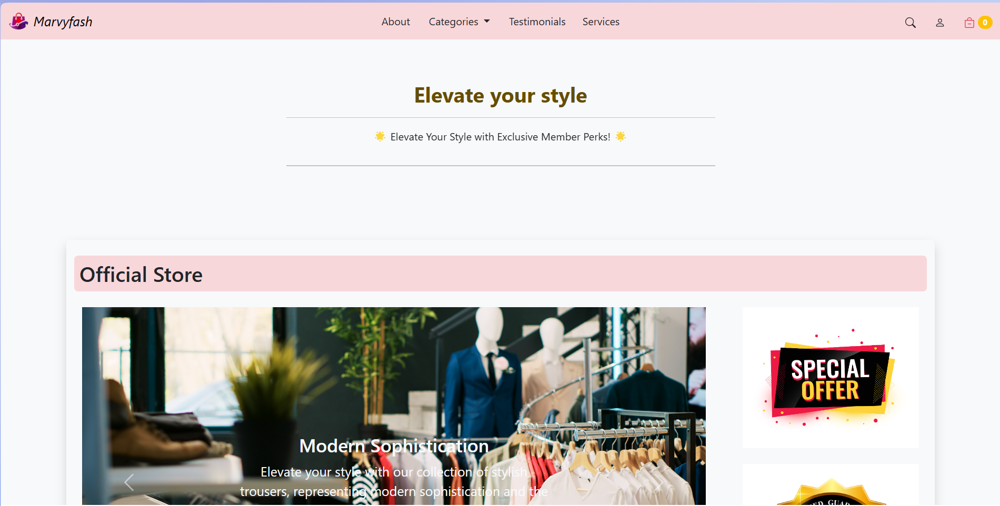
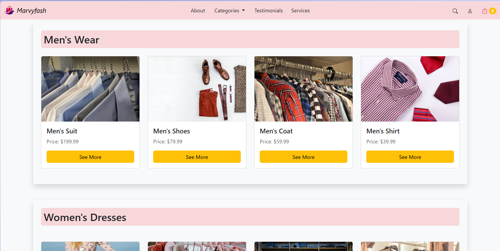
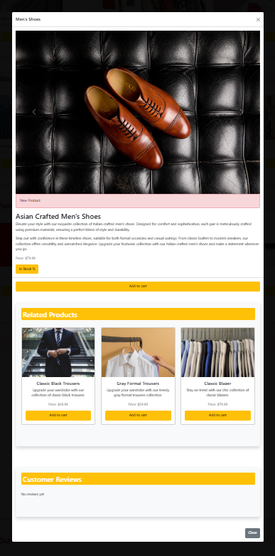
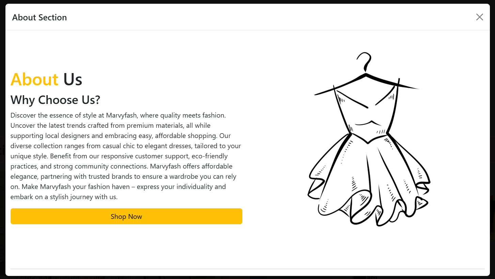
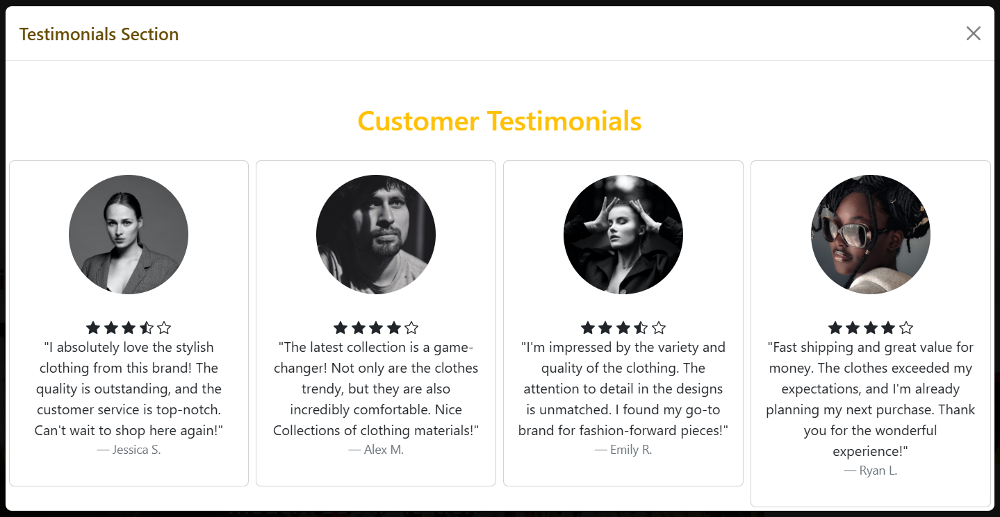
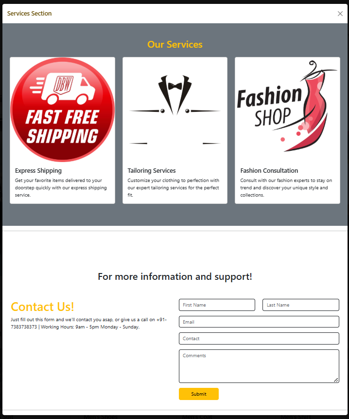

CATALOGUE
Product groupings establish a browseable retail structure.


Fashion commerce has to carry product information without losing the visual tone that makes a brand feel intentional.
The supplied interface moves between catalogue browsing and editorial brand sections instead of treating the shop as one undifferentiated product grid.




This section translates the supplied interface into the sequence of responsibilities visible in the build record.
Product groupings establish a browseable retail structure.
About, service and testimonial sections give the store a voice beyond the catalogue.
Large imagery and quieter information sections alternate to keep the interface from becoming one continuous grid.
A build record that connects the visible interface to the job the product is trying to do.
These are the actual project images supplied for the archive. They are shown without fabricated performance claims or fake client outcomes.